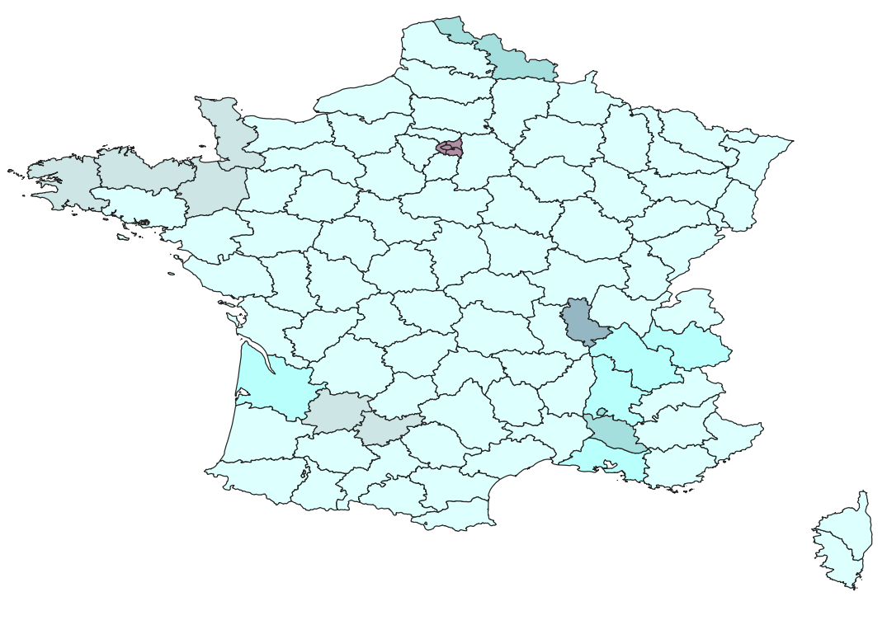
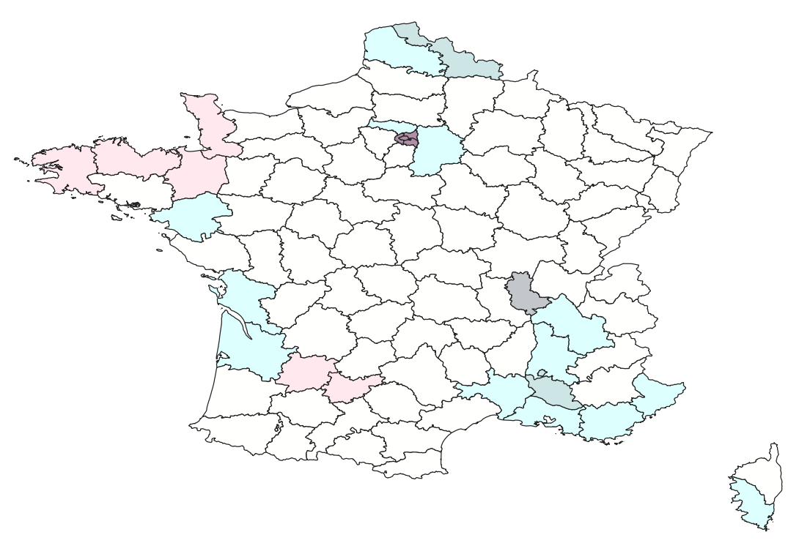

Results
Tables, charts and maps summarising land cover change, pollutant statistics, bivariate population-pollution patterns and exposure across France, 2021-2023.
Transition Metrics & Statistical Breakdown (2021-2023)
Built Area (Code 7) — Land-cover change statistics
| Indicator | Value (%) | Class |
|---|---|---|
| Stability (Persistence) | 94.08% | N/A (Baseline) |
| Top 3 Sources of Gain | ||
| Primary | 59.84% | Crops |
| Secondary | 20.61% | Trees |
| Tertiary | 13.21% | Rangeland |
| Top 3 Destinations of Loss | ||
| Primary | 63.18% | Crops |
| Secondary | 19.17% | Trees |
| Tertiary | 14.05% | Rangeland |
Statistics for the Built Area class, computed from the shared 2021→2023 land-cover change raster. Stability = Svalid / (Svalid + Lvalid); Gain and Loss shares are each class’s area over total valid Gain / Loss. Cloud transitions (code 10xx / xx10) are excluded as No Data. Percentages are area-based: the raster was reprojected to EPSG:3035 (ETRS89-LAEA, equal-area) with nearest-neighbour resampling before computing areas, so shares reflect real surface rather than pixel counts.
Crops (Code 5) — Land-cover change statistics
| Indicator | Value (%) | Class |
|---|---|---|
| Stability (Persistence) | 94.14% | N/A (Baseline) |
| Top 3 Sources of Gain | ||
| Primary | 47.34% | Rangeland |
| Secondary | 31.77% | Trees |
| Tertiary | 17.89% | Built Area |
| Top 3 Destinations of Loss | ||
| Primary | 47.45% | Rangeland |
| Secondary | 35.73% | Trees |
| Tertiary | 15.62% | Built Area |
Statistics for the Crops class, computed from the shared 2021→2023 land-cover change raster. Stability = Svalid / (Svalid + Lvalid); Gain and Loss shares are each class’s area over total valid Gain / Loss. Cloud transitions (code 10xx / xx10) are excluded as No Data. Percentages are area-based: the raster was reprojected to EPSG:3035 (ETRS89-LAEA, equal-area) with nearest-neighbour resampling before computing areas, so shares reflect real surface rather than pixel counts.
Trees (Code 2) — Land-cover change statistics
| Indicator | Value (%) | Class |
|---|---|---|
| Stability (Persistence) | 94.71% | N/A (Baseline) |
| Top 3 Sources of Gain | ||
| Primary | 50.74% | Crops |
| Secondary | 42.22% | Rangeland |
| Tertiary | 4.63% | Built Area |
| Top 3 Destinations of Loss | ||
| Primary | 56.11% | Rangeland |
| Secondary | 32.98% | Crops |
| Tertiary | 9.30% | Built Area |
Statistics for the Trees class, computed from the shared 2021→2023 land-cover change raster. Stability = Svalid / (Svalid + Lvalid); Gain and Loss shares are each class’s area over total valid Gain / Loss. Cloud transitions (code 10xx / xx10) are excluded as No Data. Percentages are area-based: the raster was reprojected to EPSG:3035 (ETRS89-LAEA, equal-area) with nearest-neighbour resampling before computing areas, so shares reflect real surface rather than pixel counts.
Pollutant Zonal Statistics
The zonal statistics reveal a clear correlation between built area persistence and changes in NO2 concentrations. Stable zones-areas where the built footprint was maintained throughout the period-experienced a mean decrease in NO2 concentration of -0.9458 µg/m³. Gain zones, representing areas where new built surfaces appeared by 2023, showed an identical mean reduction of -0.9458 µg/m³. On the other hand, Loss zones, where areas classified as built in 2021 were transitioned out by 2023, recorded the weakest improvement with a mean decrease of only -0.7137 µg/m³.
While all three transition classes show an overall decline in nitrogen dioxide consistent with regional emission trends, the lower reduction in Loss zones indicates distinct environmental dynamics in areas transitioning away from built infrastructure. The minimum value (-4.6751 µg/m³) and the maximum value (3.1563 µg/m³) are identical across all three zones, reflecting the global spatial footprint of the input AMAC raster across these intersecting masks.
| Crop Transition Class | Mean Change | Min Change | Max Change |
|---|---|---|---|
| Stable | -0.9458 | -4.6751 | 3.1563 |
| Gain | -0.9458 | -4.6751 | 3.1563 |
| Loss | -0.7137 | -4.6751 | 3.1563 |
Bar Chart NO2
The zonal statistics for PM2.5 indicate that land cover persistence in agricultural crop zones influences particulate distribution patterns. Stable zones-areas where agricultural land use remained unchanged-exhibited a mean decrease in PM2.5 concentration of -0.8898 µg/m³. Gain zones, where new crop surfaces were established by 2023, recorded a mean reduction of -0.7395 µg/m³. Loss zones, where 2021 crop areas transitioned to other classes, showed the most limited improvement with a mean decrease of -0.7060 µg/m³.
These findings highlight that while the entire study area follows the national downward trend for PM2.5, the rate of reduction is marginally higher in stable agricultural environments. The consistency of the minimum (-4.6751 µg/m³) and maximum (3.1563 µg/m³) values across all transition classes suggests that extreme atmospheric events and regional climate fluctuations exert a more significant influence on local concentrations than localized land-cover transitions alone.
| Crop Transition Class | Mean Change | Min Change | Max Change |
|---|---|---|---|
| Stable | -0.8898 | -4.6751 | 3.1563 |
| Gain | -0.7395 | -4.6751 | 3.1563 |
| Loss | -0.7060 | -4.6751 | 3.1563 |
Bar Chart PM2.5
The zonal statistics reveal a consistent pattern linking tree cover persistence to greater PM10 reduction. Stable zones-areas where tree cover was maintained throughout the period-experienced the largest mean decrease in PM10 concentration (-1.0476 µg/m³). Gain zones, where new tree cover appeared by 2023, showed a slightly smaller reduction (-0.9856 µg/m³). Loss zones, where trees present in 2021 were converted to other land cover classes by 2023, recorded the weakest improvement (-0.9227 µg/m³). While all three zones show an overall decline in PM10 consistent with the nationwide downward trend identified in the AMAC analysis, the gradient across zones suggests that tree cover contributes to particulate matter removal through canopy interception and dry deposition. The minimum value is identical across all three zones (-4.3773 µg/m³), reflecting the global extent of the AMAC raster. The maximum value for Loss (0.7946 µg/m³) is notably lower than for Stable and Gain (1.1967 µg/m³), indicating that the areas where PM10 increased the most did not coincide with zones of tree loss.
| Crop Transition Class | Mean Change | Min Change | Max Change |
|---|---|---|---|
| Stable | -1.0476 | -4.3773 | 1.1967 |
| Gain | -0.9856 | -4.3773 | 1.1967 |
| Loss | -0.9227 | -4.3773 | 0.7946 |
Bar Chart PM10
Bivariate Mapping - Population X Pollution

The layer classifies the 96 French departments based on two variables: median population density class (pop_class_median) and maximum NO2 concentration class (pol_class_max). Regarding NO2 pollution, the vast majority of departments fall into the low concentration categories, while elevated levels are visibly concentrated in major urbanized and industrialized regions. Departments showing higher bivariate class values include the Île-de-France region (Paris and its immediate surrounding departments), the Rhône valley (around Lyon), parts of the Mediterranean coast (e.g., Bouches-du-Rhône), and northern sectors (Nord). The most frequent bivariate class remains 11 (low population, low NO2), represented by the extensive white areas covering most of the map, indicating that the majority of France maintains both low population density and low nitrogen dioxide pollution levels. The highest intensity bivariate class (25: big population + very high NO2) is distinctly concentrated in the dense urban core of the Île-de-France region (Paris, Hauts-de-Seine, Seine-Saint-Denis, and Val-de-Marne).

This layer classifies the 96 French departments based on median population density (pop_class_median) and maximum PM2.5 concentration (pol_class_max).
Regarding PM2.5, we observe that the majority of departments are contained within lower concentration thresholds, with significant elevations appearing in the Île-de-France urban core and major industrial corridors in the Nord and Grand Est regions.
The most frequent bivariate class remains 11 (low population, low PM2.5), covering the expansive rural interior of France. In contrast, the highest intensity class (25: high population + high PM2.5) is almost exclusively localized in the densest administrative centers, underscoring the strong positive correlation between fine particulate matter concentrations and intensive urban/industrial land use.

The layer classifies 96 French departments based on two variables: median population density class (pop_class_median) and maximum PM10 concentration class (pol_class_max). Regarding PM10 pollution, 76 departments (79.2%) fall into the low concentration category (class 1), while 20 departments (20.8%) exhibit high concentration levels (class 2). Departments with elevated PM10 are concentrated in Île-de-France (Paris, Hauts-de-Seine, Seine-Saint-Denis, Val-de-Marne), Mediterranean coastal areas (Bouches-du-Rhône, Alpes-Maritimes, Var, Corse-du-Sud), and northern industrial zones (Nord, Pas-de-Calais). The most frequent bivariate class is 11 (low population, low PM10) with 70 departments, indicating that the majority of France has both low population density and low particulate matter pollution. Only 4 departments are classified as 25 (very high population + high PM10): Paris, Hauts-de-Seine, Seine-Saint-Denis, and Val-de-Marne, the urban core of the Île-de-France region.
Population Exposure Analysis
Proportional distribution of national population counts (pop_sum) grouped by regional maximum concentration thresholds (pol_class_max)
NO2 Exposure Profile
Calculated distribution from FRANCE_no2_2023_chart.gpkg
NO2 Exposure Analysis
Total population exposure was computed by dissolving the bivariate layer by pollution class (pol_class_max) and running Zonal Statistics against the raw WorldPop population count raster (sum statistic). Results show that 39.7% of France's population lives in areas classified as NO2 concentration level 1 (≤ 10 µg/m³), while the majority, 60.3%, is exposed to level 2 concentrations (>10 and ≤ 20 µg/m³). Because NO2 pollution levels correspond tightly with urban intensity, the most densely populated administrative zones of the country-notably the urban core of the Île-de-France region-fall entirely into the higher concentration category, resulting in a disproportionately high share of the national population being exposed to elevated nitrogen dioxide levels relative to the geographic area these zones represent.
This severe visual skew is highly correlated with the localized expansion of major impervious transport corridors and artificial dense urban layouts evaluated in our step 5 criteria models.
PM2.5 Exposure Profile
Calculated distribution from FRANCE_pm2p5_2023_chart.gpkg
PM2.5 Exposure Analysis
Unlike NO2, PM2.5 concentrations demonstrate a significant spatial correlation with agricultural crop corridors, where intensive farming practices contribute to higher baseline particulate levels. These micro-aerosols, capable of bypassing biological filtration, represent a persistent public health challenge across both rural-fringe and dense urban sectors of the study area.
PM10 Exposure Profile
Calculated distribution from FRANCE_pm10_2023_chart.gpkg
PM10 Exposure Analysis
Total population exposure was computed by dissolving the bivariate layer by pollution class (pol_class_max) and running Zonal Statistics against the raw WorldPop population count raster (sum statistic). Results show that 59.3% of France's population lives in areas classified as PM10 concentration level 1 (≤15 µg/m³), while 40.7% is exposed to level 2 concentrations (>15 and ≤25 µg/m³). Although only 20.8% of departments exceed the 15 µg/m³ threshold by area, these include the most densely populated zones of the country, notably the Île-de-France region, resulting in a disproportionately high share of the population being exposed to elevated particulate matter levels.
Download the Outputs
All 25 mandatory deliverables produced across Labs 2-4 (naming convention: FRANCE_*)